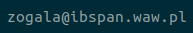

HOME
RESEARCH
TEACHING
HOME
RESEARCH
TEACHING
Barbara Żogała-Siudem
, PhD
Department of Stochastic Methods
Systems Research Institute
Polish Academy of Sciences
ul. Newelska 6, 01-447, Warsaw, Poland
e-mail:
